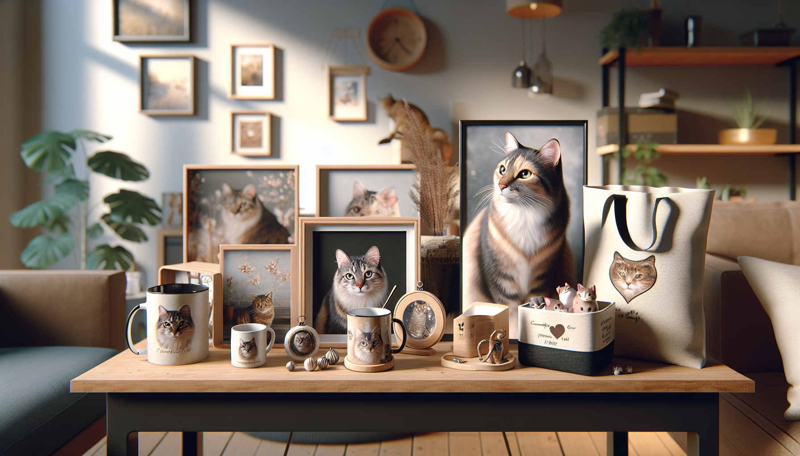

If you have ever shopped for a cat lover, you already know one thing: generic gifts rarely get the same excited reaction as something made just for their favorite feline. That is exactly why personalized cat products continue to stand out. They feel thoughtful, memorable, and emotionally meaningful in a way that mass-produced items simply cannot match.
For pet owners, cat moms, dog lovers shopping for their cat-loving friends, and gift shoppers searching for something unique, custom pet gifts hit a sweet spot. They are practical, sentimental, and highly shareable. Better yet, the right personalized cat products do not just look cute online. They actually sell because they connect with real people and real stories.
At SnoutAndAbout, personalized pet products are designed with that connection in mind. Whether someone is celebrating a new kitten, honoring a beloved companion, or just wanting to show off their cat obsession in the most adorable way possible, custom gifts make that bond visible. In this guide, we are diving into the personalized cat products that actually sell, why they work so well, and what buyers are really looking for when they click “add to cart.”
Cats are family. For many pet owners, they are not just animals sharing the home. They are daily companions with huge personalities, funny routines, and endless photo-worthy moments. Personalized products turn that relationship into something tangible, whether it is a keepsake, home decor, or an everyday item that makes someone smile.
There are a few big reasons custom cat gifts perform so well:
That combination of emotional appeal and giftability is what makes personalized cat products such strong sellers year-round.
One of the most reliable personalized cat products is custom drinkware. Mugs in particular are practical, affordable, and easy to gift, which makes them a consistent favorite. A personalized cat mug featuring a pet’s name, portrait, or playful illustration feels both useful and special.
Why do these sell so well? Because they fit seamlessly into everyday life. Morning coffee becomes a tiny celebration of a beloved pet. For cat owners who proudly show off their furry companion at every opportunity, a custom mug is an easy yes.
Popular options include:
These products also do well during the holiday season because they are easy for gift shoppers to personalize without overcomplicating the buying process. If the design is charming and the customization is clear, buyers feel confident ordering one for themselves and another for a fellow pet lover.
Not every pet gift is about celebration. Some of the most meaningful personalized cat products are memorial items created to honor a pet who is deeply missed. While this is an emotional category, it is also one with genuine demand because people want thoughtful ways to remember the animals who shaped their lives.
Personalized cat memorial gifts often include a pet’s name, dates, photo, or a heartfelt phrase. These details transform a simple item into a keepsake that offers comfort and remembrance.
Best-selling memorial ideas often include:
Gift shoppers often choose these items for friends or family members who have recently lost a pet. What matters most here is sensitivity, tasteful design, and a warm presentation. Products in this category sell because they meet a heartfelt need with compassion and care.
Another category of personalized cat products that actually sells is home decor. Cat lovers enjoy incorporating their pets into their living spaces, especially when the design feels stylish rather than overly novelty-driven. Custom decor allows buyers to celebrate their cats in a way that suits their personal taste.
Popular home-focused personalized products include wall art, pillows, ornaments, and framed prints. These items work especially well because they combine emotional meaning with display value. They are not tucked away in a drawer. They become part of the home.
Gift shoppers also gravitate toward personalized keepsakes because they feel substantial. A custom ornament or framed cat print can mark a first holiday with a new kitten, commemorate a rescue adoption, or simply make a cat lover’s space feel more personal.
For sellers, decor products often perform best when they offer:
When a custom cat product looks beautiful in a real home setting, it becomes much easier for buyers to imagine gifting it or displaying it themselves.
Some of the strongest-performing products are the ones people can use every day. Personalized tote bags, shirts, keychains, and accessories are especially popular because they blend function with personality. They let cat lovers carry a little piece of their pet wherever they go.
Tote bags are a standout option because they appeal to a wide audience. They are practical for errands, reusable for shopping, and easy to gift. Add a custom cat illustration or pet name, and suddenly a simple accessory becomes a conversation starter.
Other everyday items that tend to perform well include:
These products are especially attractive to younger buyers and social media-savvy shoppers who love sharing personalized finds. They are also ideal for gift givers who want something fun, affordable, and highly individual.
Not every custom product becomes a bestseller. The personalized cat products that truly sell usually share a few important traits. They are emotionally resonant, visually appealing, and simple to order. Buyers want the joy of customization without confusion or hassle.
Here is what helps custom cat products convert:
In other words, the product has to do more than just include a pet name. It needs to feel intentional and worth keeping. That is where thoughtful design makes all the difference.
Gift shoppers are often looking for a safe but meaningful choice. They want the present to feel personal, but they also want confidence that the recipient will genuinely love it. Personalized cat products work so well because they check both boxes.
When choosing a custom cat gift, most buyers think about:
For example, a personalized cat mug is perfect for a casual but thoughtful gift. A memorial frame is more appropriate for a sympathy gift. A custom ornament shines during the holiday season. A tote bag or shirt feels fun and trendy for everyday use. Matching the product to the moment is part of what drives sales.
That is also why curated shops like SnoutAndAbout attract repeat buyers. Shoppers know they can find personalized pet products that feel warm, polished, and truly giftable, without having to sort through endless generic options.
So, what personalized cat products actually sell? The answer is simple: the ones that make people feel something. Custom mugs, memorial gifts, home decor, ornaments, totes, and keepsakes all perform well because they celebrate the bond between pets and their people in a personal, visible way.
For pet owners, these items become treasured reminders of love, laughter, and companionship. For gift shoppers, they offer an easy way to give something thoughtful and memorable. And for cat lovers, they are a delightful excuse to feature their favorite furry family member on something beautiful and useful.
If you are looking for a gift that feels personal instead of predictable, personalized cat products are a wonderful place to start. They are charming, meaningful, and proven favorites for a reason.
Ready to find a custom gift cat lovers will truly adore? Shop personalized pet products at SnoutAndAbout on Etsy.